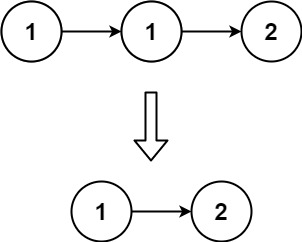
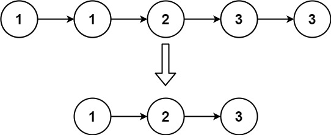

删除排序链表中的重复元素
题目
给定一个已排序的链表的头 head ， _删除所有重复的元素，使每个元素只出现一次_ 。返回 _已排序的链表_ 。
示例 1：

输入： head = [1,1,2]<br>输出： [1,2]
示例 2：

输入： head = [1,1,2,3,3]<br>输出： [1,2,3]
提示：
- 链表中节点数目在范围
[0, 300]内 -100 <= Node.val <= 100- 题目数据保证链表已经按升序 排列
/**
* Definition for singly-linked list.
* function ListNode(val, next) {
* this.val = (val===undefined ? 0 : val)
* this.next = (next===undefined ? null : next)
* }
*/
/**
* @param {ListNode} head
* @return {ListNode}
*/
var deleteDuplicates = function(head) {
};参考答案
思路与算法
由于给定的链表是排好序的，因此重复的元素在链表中出现的位置是连续的，因此我们只需要对链表进行一次遍历，就可以删除重复的元素。
具体地，我们从指针 cur 指向链表的头节点，随后开始对链表进行遍历。如果当前 cur 与 cur.next 对应的元素相同，那么我们就将 cur.next 从链表中移除；否则说明链表中已经不存在其它与 cur 对应的元素相同的节点，因此可以将 cur 指向 cur.next。
当遍历完整个链表之后，我们返回链表的头节点即可。
细节
当我们遍历到链表的最后一个节点时，cur.next 为空节点，如果不加以判断，访问 cur.next 对应的元素会产生运行错误。因此我们只需要遍历到链表的最后一个节点，而不需要遍历完整个链表。
var deleteDuplicates = function(head) {
if (!head) {
return head;
}
let cur = head;
while (cur.next) {
if (cur.val === cur.next.val) {
cur.next = cur.next.next;
} else {
cur = cur.next;
}
}
return head;
};复杂度分析
- 时间复杂度 O(n)，其中 n 是链表的长度。
- 空间复杂度 O(1)。